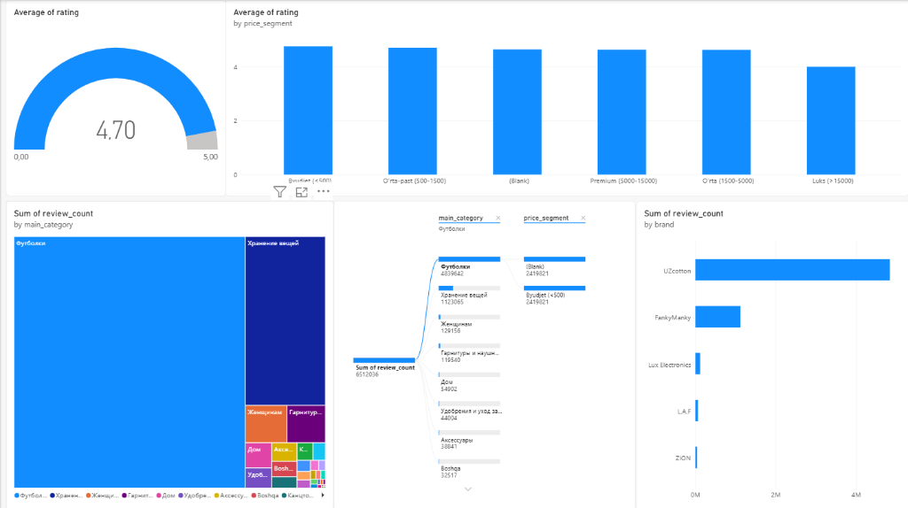
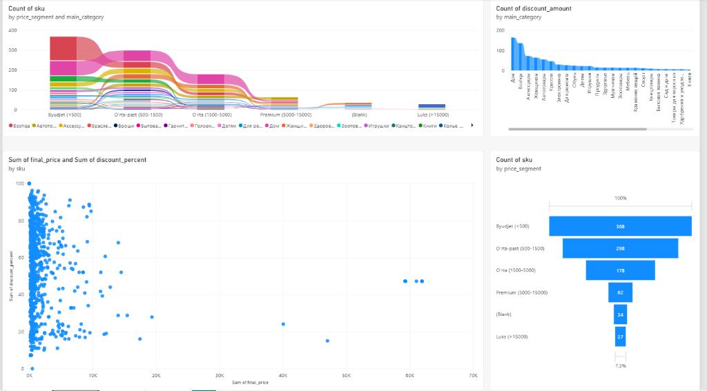

1-Power BI Dashboardi • Customer Reviews & Sentiment
Mijozlar Sharhlari, O'rtacha Reyting va Decomposition Tree Tahlili
Ushbu dashboardda 6,512,036 ta mijozlar sharhi, mahsulot toifalari, narx segmentlari va brendlar kesimida tahlil qilingan. Markaziy o'rinda Decomposition Tree (daraxtsimon dekompozitsiya) orqali xaridlar oqimi ko'rsatilgan.
Power BI: Average of Rating & Sum of Review Count (Haqiqiy Asl Holati)
Dashboard 1
Bosing →

Ichiga kirish & Barcha ko'rsatkichlarni tekshirish
1. Average of rating
4.70 / 5.00
2. By price_segment
Byudjet: 4.8 • Luks: 4.0
3. Treemap Category
Футболки: 4,839,642
4. Decomposition Tree
6,512,036 ta sharh
5. Top Brand
UZcotton • 4.8M
2-Power BI Dashboardi • Price Segmentation & SKU Funnel
Narx Segmentatsiyasi, SKU Voronkasi va Chegirmalar Tahlili
967 ta tovar SKU bo'yicha tuzilgan Ribbon chart, Funnel voronkasi (Byudjet 368 ta, O'rta-past 298 ta, Luks 27 ta), Scatter korrelyatsiyasi (narx va chegirma) hamda toifalar bo'yicha chegirmalar soni.
Power BI: Ribbon Chart, Funnel, Scatter & Discount Amount (Haqiqiy Asl Holati)
Dashboard 2
Bosing →

Ichiga kirish & Barcha ko'rsatkichlarni tekshirish
1. Ribbon Chart
Count of sku by segment
2. Count of discount
Дом, Boshqa, Аксессуары...
3. Scatter Plot
final_price vs discount_%
4. Funnel Voronkasi
368 → 298 → 178 → 27
Power BI Logistika Modeli • WB_Logistics_PVZ.xlsx
latitude and longitude
Wildberries tarmog'ining 28,312 ta rasmiy buyurtmalarni tarqatish punktlari (PVZ) koordinatalari bo'yicha interaktiv geofazoviy taqsimoti.
country_name:
28,312 PVZ
Ko'k nuqtalarni bosib aniq manzil, shahar va ish vaqtini ko'rishingiz mumkin
Jami Tarmoq (6 Davlat)
28,312 PVZ punktlari
O'zbekiston Klasteri
77 PVZ • Toshkent, Samarqand...
Belarus & Qozog'iston
Minsk 902 • Qozog'iston 445
Armaniston & Qirg'iziston
Yerevan 289 • Bishkek 30